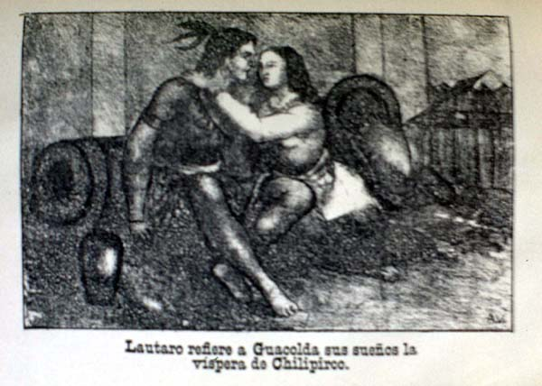

|
Origin
|
|  |
| Lautaro refiere a Guacolda sus sueños la víspera de Chilipirco (from Horacio Lara, Crónica de la Araucania, 1889) |
Welcome to the guided tour "origin", which is about to depart! Please use the "back" and "forward" buttons below to take you through this part of the exhibition. Click on the images if you want to find out more about an exhibit, or if you want to see a larger image of it.
In his seminal work Beginnings: Intention and Method, Edward Said distinguished the notion of 'origin' from that of 'beginning': works of literature, he argues, begin by establishing their relations of continuity and rupture with regard to those preceding them. A beginning is an inscription into a preexisting texture of meaning that aspires to transform that into which it is inscribed – an intention of difference, an invitation to start anew. An 'origin', by contrast, cannot be attributed to the conscious intention of a creative subject; rather, it is the secret point in time and space this intention stems from, unbeknown to the subject, something that can only retrospectively and speculatively be tracked down by the critic, the analyst, the historian, or the mythmaker (who all of them are in one sense or the other).
Following Said´s suggestion, the discourse of nationalism is one that begins by projecting an origin: the history of the nation-state´s emergence and consolidation in Latin America might be read, in fact, as a series of 'beginnings' that challenge and overwrite the previous enunciation´s myths and iconographies of origin. Thus, for example, early post-independence thought had called heavily on images of Amerindian civilisation filtered through the prism of neoclassical rhetoric and visual form. In Brazil, the trope of the virtuous native warrior or Indian maiden sacrificing themselves for a (white) nation to take root on tropical soil was at the core of romantic indianism, whereas in Chile, Ercilla´s epic poem La Araucana inspired a tradition of literary and pictorial allegorisation of indigenous resistance against the Spaniards as a spiritual precursor to bellicose and indomitable present-day Chile. Horacio Lara´s Crónica de la Araucania (1889), published in serial form in a Santiago newspaper, continued to invest into such an idealised, mythical image of 'Araucanians' as spiritual ancestors, at a time when their contemporary descendants were being systematically assassinated and deported from their homelands by the Chilean army. While indianism remained an important strand in certain discourses of national identiy well into the twentieth century, it also increasingly came under challenge from scientific representations of the Indian as evolutionally inferior: parallel to the modernisation of the state, elite intellectuals and artists would seek new origins for the nation in popular culture, the struggles for independence, the colonial past, or even in remote prehistory.
|
[ Back to index | Forward ] |